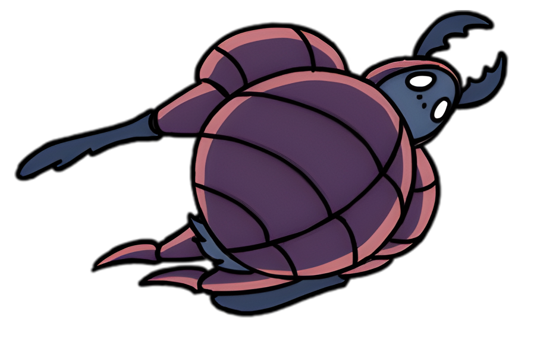
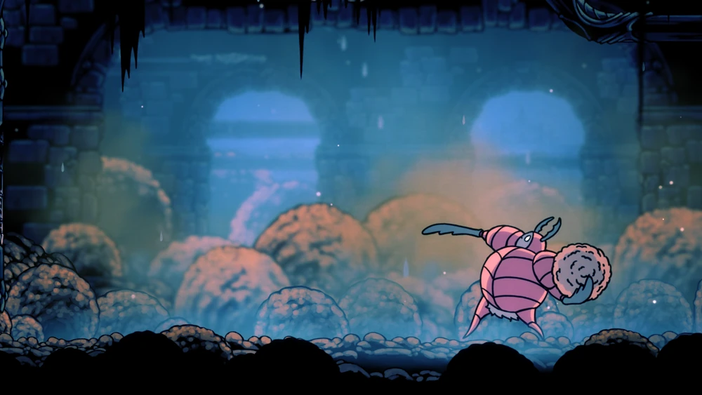

DEFENSOR
DO ESTERCO
O mais leal dos cinco cavaleiros

"Hábil guerreiro que vive no coração da Hidrovia. Ataca intrusos com bolas de esterco compactado. Lutar por 'honra', ou 'lealdade'... é o mesmo que lutar por cinzas. Se você quer matar, faça isso por você mesmo. Essa é a natureza de um verdadeiro caçador."

História

O Defensor do Esterco costumava ser conhecido como Ogrim, o mais leal dos Cinco Grandes Cavaleiros
de Hallownest. Como tal, ele participou de muitas batalhas e aventuras. Ele também era
igualmente famoso por seu mau cheiro, embora isso não o impedisse de desfrutar da companhia da Dama
Branca e seus companheiros cavaleiros. Ele gostava particularmente da cavaleira Isma.
Ogrim sobreviveu à Infecção mas se isolou em uma parte da Hidrovia Real onde o lixo se acumula. Lá,
como o Defensor do Esterco, ele guarda o controle da bomba que permite a entrada ao Bosque de Isma
no outro lado dos esgotos. O Defensor do Esterco desafia qualquer um que entrar no local para
desafiá-lo. Ele também passa o tempo rolando esterco aos arredores e moldando estátuas com o
mesmo.
O Defensor do Esterco parece não saber do destino do seu Rei e dos outros cavaleiros. Em seu
isolamento, ele se ilude pensando que eles retornarão e que Hallownest pode renascer.
Eventos
O Defensor do Esterco pode ser ouvido pela primeira vez na entrada de seu domínio sujo. Ele
confunde o Cavaleiro com uma carapaça irracional e o ataca. Uma vez derrotado, ele deixa para
trás seu Amuleto Insígnia do Defensor antes de se enterrar no subsolo no plano de fundo.
Ao retornar à sua área depois de sentar em um Banco, o Defensor do Esterco levanta a cabeça do
chão para cumprimentar o Cavaleiro. Ele pede desculpas por atacá-lo e comenta como o Cavaleiro
provou sua honra na batalha. Ele percebe quando o Cavaleiro adquire a Lágrima de Isma e
explica que não pode visitar o bosque da sua companheira cavaleira devido ao seu juramento e
deveres.
Usar o Mergulho Desolador/Escuridão Descente no chão abaixo da alavanca da bomba revela uma
caverna escondida onde o Defensor do Esterco repousa. Ali, ele moldou estátuas de esterco dos
Cinco Grandes Cavaleiros, e uma do Rei Pálido no outro lado com um Ídolo do Rei no chão.
Quando todos os três Sonhadores forem derrotados, o Defensor do Esterco pode ser encontrado
dormindo em sua caverna. Golpeá-lo com o Ferrão dos Sonhos enquanto ele dorme envia o Cavaleiro
para dentro de seus sonhos. Lá é possível desafiar o Defensor Branco, uma versão mais forte do
Defensor do Esterco do passado dourado do Reino. A cada derrota do Defensor Branco, Ogrim se
conforta com seu juramento a Hallownest e ao Rei Pálido.
Depois de derrotar o Defensor Branco cinco vezes, o Defensor do Esterco percebe a presença do
Cavaleiro em seu sonho. Ele acorda e explica como ele pode facilmente ver o Cavaleiro entre
os maiores heróis da época. Ao deixar a área e retornar, o Defensor do Esterco desaparece do
seu lugar de descanso e deixa uma nova estátua de esterco com a imagem do Cavaleiro.
Imagens
